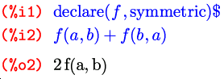

Впервые было опубликовано в «Linux Format» №12 (86), декабрь 2006 г.
В прошлый раз мы остановились на возможностях программирования, предназначенных для написания собственных функций и модулей к Maxima — и теперь для их полноценного использования рассмотрим несколько инструментов работы с файлами, позволяющих сохранять и загружать эти функции и модули на диск и с диска. Далее речь пойдет о наложении определенных условий на неизвестные и значения функций. Напоследок познакомимся с функциями по работе… с функциями: это один из очень мощных инструментов, позаимствованных из функционального программирования; а также разберем несколько более крупных учебных примеров, использующих многое из изученного нами во всех статьях цикла.
Среди средств для операций с файлами функции с наиболее очевидными именами — save и load — имеют, вопреки привычной для Maxima логичности всех названий, различный контекст. Первая предназначена для выгрузки Maxima-выражений в виде исходных кодов на Lisp, так что если вы не знаток Lisp (да и реализации внутренних механизмов Maxima), то эта функция представляет лишь чисто академический интерес. Посему подробнее мы займемся другими функциями — для обработки так называемых пакетных (batch) файлов, хранящих выражения уже в синтаксисе самой Maxima. А поскольку в виде таких файлов поставляется немалое количество функционала Maxima, то начнем с загрузки. И вот о второй из очевидно-именуемых функций здесь уже будет рассказано.
Функции чтения файлов с выражениями Maxima существует три: demo(имя-файла), batch(имя-файла) и batchload(имя-файла). Первая предназначена для загрузки так называемых демо-файлов, задуманных, как и явствует из названия, для демонстрационных примеров. Она загружает демо-файл и выполняет его в пошаговом режиме, ожидая нажатия Enter после выполнения каждой строки. В составе Maxima поставляется значительное количество демо-файлов; упоминания о них можно найти в документации, а сами файлы несложно обнаружить среди содержимого пакета maxima-share (либо, в случае отсутствия такового в вашем дистрибутиве, просто maxima) по их расширению — .dem.
Функция batch() загружает Maxima-файл с расширением .mac или .mc (от первоначального названия программы — Macsyma) и выполняет содержащиеся в нем выражения так, как если бы они вводились прямо в текущей сессии, то есть с отображением результата каждого выражения и назначением меток %iN, %oN. Функция batchload(), напротив, подгружает пакетный файл «молча»: все назначенные в нем функции и переменные становятся доступны, но результаты не видны, и весь хранимый ввод-вывод, включая значения символов % и _ и результаты, возвращаемые функцией %th(), остается тем же, что и до вызова.
Функции batch() и batchload() используют при поиске файлов для загрузки путь (точнее сказать, шаблон, потому как в нем содержатся не только имена каталогов, но и допустимые расширения файлов), который хранится в переменной file_search_maxima. По умолчанию эта переменная содержит все каталоги, в которые устанавливаются .mac-файлы из пакетов Maxima, а также ~/.maxima, предназначенный для пользовательских файлов. Для других функций загрузки существуют отдельные переменные: file_search_lisp и file_search_demo, смысл которых понятен из их названий.
Ну и под конец здесь нужно вспомнить о вышеназванной функции load. Она, фактически, является оберткой над двумя функциями: уже описанной выше batchload() и loadfile(), вторая, совершенно аналогично первой, загружает файл, но уже не с выражениями Maxima, а с исходным кодом Lisp, то есть является парной к функции save(). Функцию load() можно, в принципе, использовать вместо batchload(): путь file_search_maxima задан в ней раньше, чем file_search_lisp, так что в случае неоднозначности она будет загружать файлы Maxima; а кроме того, так короче.
Некоторый функционал Maxima содержится в неподгружаемых автоматически внешних файлах, которые, соответственно, нужно принудительно загрузить перед использованием:
Помимо ручной загрузки нужного файла, можно также настроить Maxima на автоматическую подгрузку в случае вызова заданной функции. Делается это так: setup_autoload(имя-файла, имена-функций); нужные функции здесь перечисляются через запятую прямо после имени файла. Удобнее, конечно, будет не вызывать функцию setup_autoload() вручную (так в ней и толку немного), а настроить Maxima на автоматический ее запуск при старте программы. Файл, который, при его наличии, вызывается при каждом запуске Maxima, называется maxima-init.mac и самое логичное для него местоположение — все тот же каталог ~/.maxima. Конечно, он может содержать не только вызовы функции setup_autoload(), а любые выражения Maxima, которые вы хотите выполнять при каждом ее запуске. Использование этой функции может сделать вашу работу с Maxima намного более удобной в том случае, если вы часто используете некоторые из внешних функций Maxima или функции, вами же и написанные.
Для полноценного чтения файлов всего сказанного уже вполне достаточно, теперь перейдем к записи в них. Тут нас в первую очередь интересует функция stringout(), которая позволяет выгружать в файл любые выражения и функции Maxima в точно таком виде, в каком их загружают функции demo(), batch() и batchload(). С ее помощью можно писать выражения, которые вы хотите иметь во внешнем модуле, находясь непосредственно в интерфейсе Maxima, с последующей записью в этот самый модуль. Для выгрузки функций в один из стандартных каталогов Maxima (самым логичным вариантом будет, пожалуй, упомянутый выше ~/.maxima) имя файла во всех вариантах вызова функции stringout() нужно задавать с полным путем; в случае задания имени без пути файл будет создан в текущем каталоге, то есть в том, откуда производился запуск Maxima.
Здесь, чтобы было интереснее и не приходилось писать в файлы всякую ерунду, немного прервемся и создадим пару небольших функций.
Эта функция возвращает список всех простых чисел, меньших чем заданное целое число. Сначала мы проверяем, является ли аргумент целым числом и делаем это простейшим образом: в случае невыполнения условия оператор if, напомню, вернет false. Генерируется список тоже самым простым и коротким в реализации способом — рекурсией. (примечание для людей, далеких от программирования: рекурсивная функция — это функция, вызывающая саму себя; чаще всего такие функции строятся по принципу индукции). Здесь используется функция Maxima по имени prev_prime(), которая возвращает простое число, предшествующее заданному целому.
У рекурсии, при всей ее простоте реализации, есть неоспоримый минус — только один, но весьма существенный: чрезвычайная требовательность к объему памяти. Поэтому, для обеспечения возможности получать последовательности из больших простых чисел, добавим в наш учебный пример еще одну функцию:
Смысл, думаю, понятен по аналогии с предыдущей: теперь мы еще и ограничили возвращаемый список снизу.
Теперь, когда у нас уже есть primesbetween(), первую функцию можно написать по «принципу чайника» — сведя задачу к предыдущей:

Теперь вернемся к stringout(). Эта функция, как и многие другие, может принимать несколько различных вариантов аргументов, первым из которых всегда выступает имя файла для записи, а остальные отвечают за то, что же именно будет туда записано. В варианте stringout(имя-файла, [начало, конец]) записаны будут ячейки ввода с номерами от «начала» до «конца» включительно:
$ cat .maxima/primes.mac primes(n):=if integerp(n) then (if n <= 2 then [] else append(primes(prev_prime(n)),[prev_prime(n)])); primesbetween(n,m):=if integerp(n) and integerp(m) then (if m <= 2 or prev_prime(m) <= n then [] else append(primesbetween(n,prev_prime(m)),[prev_prime(m)]));
Как видите, по умолчанию вывод получается не слишком красивым, поэтому сразу рассмотрим один ключ, влияющий на его формат. Долго рассказывать о нем смысла нет, лучше показать на примере:
$ cat .maxima/primes.mac
primes(x):=if integerp(x)
then (if x <= 2 then []
else append(primes(prev_prime(x)),[prev_prime(x)]));
primesbetween(n,m):=if integerp(n) and integerp(m)
then (if m <= 2 or prev_prime(m) <= n then []
else append(primesbetween(n,prev_prime(m)),
[prev_prime(m)]));
Представления о правилах отступов у создателей этой опции несколько специфичные, но тем не менее, результат стал намного читабельнее. Так что, если вы планируете сохранять выражения Maxima не только для того, чтобы потом загружать их обратно, а желаете редактировать созданные файлы, я рекомендую вам прописать grind:true глобально в файле ~/.maxima/maxima-init.mac.
Идем дальше. С помощью ключевого слова input можно выгрузить в файл все ячейки ввода разом:
$ cat primes-sample.mac
primes(n):=if integerp(n)
then (if n <= 2 then []
else append(primes(prev_prime(n)),[prev_prime(n)]));
primesbetween(n,m):=if integerp(n) and integerp(m)
then (if m <= 2 or prev_prime(m) <= n then []
else append(primesbetween(n,prev_prime(m)),
[prev_prime(m)]));
primes1(n):=primesbetween(1,n);
stringout(".maxima/primes.mac",[1,2]);
grind:true;
stringout(".maxima/primes.mac",[1,2]);
(N:[random(100000)],for i thru 9 do N:append(N,[N[i]+random(100000)]),N);
(P:[],for i thru 10 do P:append(P,primesbetween(N[i]-50,N[i])),P);
Кроме input, есть еще два ключевых слова: functions и values. Первое позволяет записать определения всех функций, второе — присвоение всем символам выражений их текущих значений:
$ cat .maxima/primes.mac
primes(n):=if integerp(n)
then (if n <= 2 then []
else append(primes(prev_prime(n)),[prev_prime(n)]));
primesbetween(n,m):=if integerp(n) and integerp(m)
then (if m <= 2 or prev_prime(m) <= n then []
else append(primesbetween(n,prev_prime(m)),
[prev_prime(m)]));
primes1(n):=primesbetween(1,n);
$ cat primes-sample.mac
primes(n):=if integerp(n)
then (if n <= 2 then []
else append(primes(prev_prime(n)),[prev_prime(n)]));
primesbetween(n,m):=if integerp(n) and integerp(m)
then (if m <= 2 or prev_prime(m) <= n then []
else append(primesbetween(n,prev_prime(m)),
[prev_prime(m)]));
primes1(n):=primesbetween(1,n);
N:[49900,61971,153219,244360,290427,347723,396481,465378,522906,568462];
P:[49853,49871,49877,49891,61927,61933,61949,61961,61967,153191,244313,244333,
244339,244351,244357,290383,290393,290399,290419,347707,347717,396437,
396443,396449,396479,465331,465337,465373,522857,522871,522881,522883,
522887,568433,568439,568441,568453];
И кроме всего этого, функцию stringout() можно вызвать с непосредственным перечислением в аргументах конкретных выражений. В этом случае, надо заметить, будут сохраняться не ячейки, содержащие заданные выражения, а именно сами выражения. То есть, если перечислить символ, для которого задано значение, то в файл будет записано только это значение. С именами функций, заданными непосредственно, дело обстоит не лучше: функцию таким образом задать, по сути, вообще нельзя: если просто написать ее имя, то вместо функции будет подставлен одноименный символ (или его значение, если оно задано). Но из обеих ситуаций есть выход. Для функций — штатный: функция fundef, которая принимает имя любой пользовательской функции и возвращает ее определение в точности в таком же виде, в каком оно было введено (или могло бы быть введено) в «командной строке» Maxima, с точностью до пробелов:
$ cat .maxima/primesbetween.mac
primesbetween(n,m):=if integerp(n) and integerp(m)
then (if m <= 2 or prev_prime(m) <= n then []
else append(primesbetween(n,prev_prime(m)),
[prev_prime(m)]));
$ cat .maxima/primes1.mac
primes(n):=if integerp(n)
then (if n <= 2 then []
else append(primes(prev_prime(n)),[prev_prime(n)]));
primes1(n):=primesbetween(1,n);
А для символов можно использовать небольшую хитрость: блокировать вычисление переданного выражения, а в нем написать сначала сам символ, а потом через двоеточие — его же, предварив знаком принудительного вычисления (два апострофа):
$ cat random-primes.mac P:[49853,49871,49877,49891,61927,61933,61949,61961,61967,153191,244313,244333, 244339,244351,244357,290383,290393,290399,290419,347707,347717,396437, 396443,396449,396479,465331,465337,465373,522857,522871,522881,522883, 522887,568433,568439,568441,568453];
В довершение темы работы с файлами стоит обратить внимание еще на один момент: при загрузке файлы в текущем каталоге не ищутся — и как раз для него надо задавать путь, причем полный, а не через ./имя-файла :
Теперь поговорим о функциях, позволяющих налагать определенные условия на выражения, которыми оперирует Maxima. Таких функций существует две, и достаточно разноплановых; но определенная связь между ними есть, так как все условия, заданные ими на данный момент, хранятся в общей «базе». Первая из этих функций называется declare (объявлять). С ее помощью можно объявлять весьма разнообразные факты о произвольных символах или выражениях; синтаксис ее весьма прост: declare(имя, факт) или declare(имя1 , факт1 , имя2 , факт2 , …); факты задаются с помощью ключевых слов. Сами факты я бы разделил на три группы: «технические» факты Maxima, позволяющие использовать наделенный ими символ некоторым специальным образом при вводе выражений; факты о символах (атомарных выражениях); и факты о значениях функций. К первым относятся, к примеру, свойства evflag и evfun, о которых шла речь в описании функции ev; некоторые штатные функции обладают ими по умолчанию, а с помощью функции declare мы можем присвоить эти свойства любым другим, в том числе и пользовательским, функциям. Вторая группа фактов несет информацию о неизвестных; например, мы можем указать, что некоторая неизвестная является константой, или что ее значение — целое. И третья группа — примерно то же самое, но о функциях; примеры: четная функция (f(−x) = f(x)), аддитивная (f(x + y) = f(x) + f(y)) или целочисленная. Для краткости просто перечислим наиболее интересные из возможных фактов, сгруппировав соответственно трем упомянутым группам.
Позволяет применять функцию или переменную как опцию, то есть « выражение, имя-функции » вместо « имя-функции(выражение)» или « выражение, имя-переменной » вместо « имя-переменной:true; выражение ». Подробнее см. «Maxima. Функции и операторы».
Запрещает использовать символ в выражениях до присвоения ему значения. При таком использовании Maxima выдаст ошибку. Пример см. в документации.
Делает заданное имя именем свойства (факта), что дает возможность использовать его точно так же, как все перечисленные здесь имена.
Имя трактуется как константа.
Имя трактуется как скалярная величина. На это также влияет флаг assumescalar: если он равен true, то все неопределенные символы воспринимаются как скаляры. Тут есть небольшая коллизия: если верить документации, то по умолчанию assumescalar равен false, реально же в Maxima 5.10.0 он равен true.
Имя трактуется как не-скалярная величина, то есть матрица или вектор.
Целое и нецелое число.

Четное и нечетное целое число.
Объявляет функцию как «ассоциативную» по правому аргументу.
Аналогично — по левому аргументу.
Объявляет «n-арную» функцию. Это и два предыдущих названия не совсем точны: n-арной правильно называть функцию от n аргументов, а лево- и правоассоциативной — функции именно с односторонней ассоциативностью, то есть, для «лево-» f(f(a,b),c) ≠ f(a,b,c) ≠ f(a,f(b,c)). А в Maxima все три факта объявляют на самом деле полно-ассоциативную функцию от произвольного числа аргументов, а различаются только тем, как будут расставлены скобки по умолчанию.

Оба ключевых слова объявляют функцию как симметричную (коммутативную).

Объявляет функцию как антисимметричную.

Константа выносится за знак функции.

Многие из фактов, которые можно устанавливать с помощью функции declare, сохраняются в «базе данных» фактов. Узнать текущее состояние этой базы можно с помощью функции facts(). Ее можно вызывать, либо передав в качестве единственного аргумента имя, список фактов по которому мы хотим получить, либо вообще без аргументов — тогда будут выданы все известные факты обо всех пользовательских именах. Удалить свойства позволяет функция remove(). Она, как и многие другие, имеет несколько вариантов вызова. Будучи вызвана как remove(имя, свойство) или remove(имя1 , свойство1 , имя2 , свойство2 , …), она лишает каждое переданное имя одного соответствующего ему свойства. Можно также передавать ей списки имен и свойств: remove([имя1 , имя2 , …], [свойство1 , свойство2 , …]); тогда каждое имя из списка будет лишено всех перечисленных свойств. Пар списков тоже может быть более одной: remove(список-имен1 , список-свойств1 , список-имен2 , список-свойств2 , …) — этот вызов аналогичен последовательным remove(список-имен1 , список-свойств1 ); remove(список-имен2 , список-свойств2 ); … И последний интересующий нас вариант — remove(all, свойство) удаляет «свойство» со всех имен, у которых оно есть.
Вторая «условная» функция — это функция assume() (допускать, принимать). Здесь все проще: в качестве аргументов ей можно передавать в любом количестве самые обыкновенные равенства и неравенства. Напомню только, что задавать их нужно не в синтаксической, а в логической форме, то есть не «a=b», «a#b», а «equal(a,b)», «not equal(a,b)». Из логических операторов допускается также использование and (по сути assume(x>0 and x<1) это то же самое, что и assume(x>0, x<1)), но не or — база фактов не поддерживает информацию вида «или»; и речь не о синтаксисе, а именно о конструкциях, то есть выражения типа not(a>b and a<c) тоже недопустимы. Факты, добавленные assume(), также видны функции facts():
Ключевое слово kind используется только для отображения тех фактов из базы, которые добавлены с помощью declare().

Если факты, заданные функцией declare(), удаляются вызовом remove(), то для assume() есть своя «обратная» функция — forget(), которая также принимает любое количество условий (точно таких же как и assume()), либо в качестве отдельных аргументов, либо списком.
Общая база фактов используется этими двумя не очень похожими функциями неспроста: все, кому эти факты могут пригодиться, используют обе их разновидности, причем одновременно. Например, уже известный нам предикат is:

Еще один пример использования assume()/declare() — возможность избежать неопределенностей. Вы, возможно, помните, как в одном из примеров статьи «Maxima. Алгебра и начала анализа» в ответ на попытку посчитать некий интеграл Maxima задала нам вопрос о знаке входящего в него символа. Вот в таких ситуациях тоже может пригодиться assume, дабы предвосхитить расспросы:

Вот мы и подошли к концу «теоретической» части. Надеюсь, функционала, рассмотренного на протяжении шести статей, будет достаточно для решения многих задач, а также для того, чтобы черпать дальнейшие сведения из документации — ведь мы уже изучили такие вещи, благодаря которым Maxima становится не просто «вычислялкой» отдельных небольших примеров, а настоящей «средой программирования с математическим уклоном», позволяющей создавать свои собственные математические «типы данных» — числовые системы, функционалы и прочая и прочая — и полноценные программные модули, которые могут использовать весь встроенный (или также собственноручно достроенный) функционал Maxima. Рассмотрим, напоследок, более серьезный учебный пример, в котором эти возможности можно будет лучше прочувствовать. Одна заявленная тема у нас пока осталась нераскрытой — функции для работы с функциями и «глубокой» обработки выражений. Но это настолько серьезный инструмент, что на маленьких примерах его рассматривать было бы бессмысленно, а потому мы поговорим о нем в приложении-практикуме. Удачи!